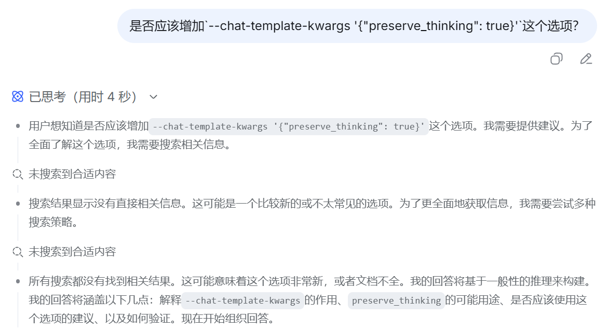
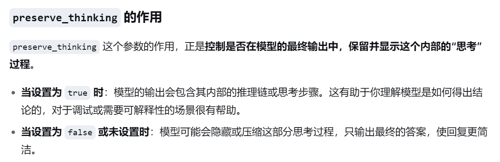
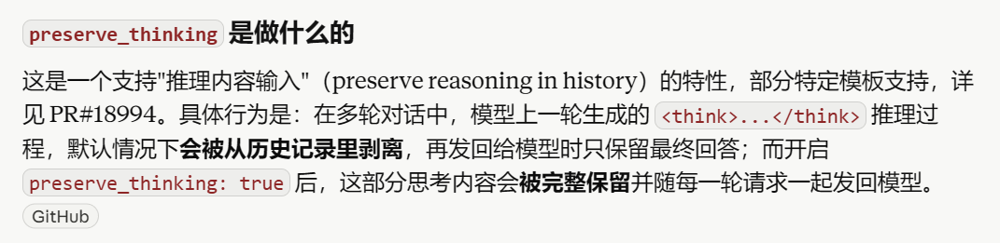
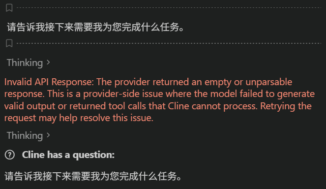
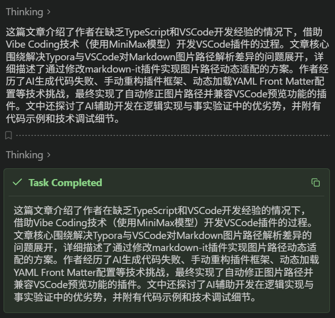
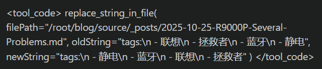
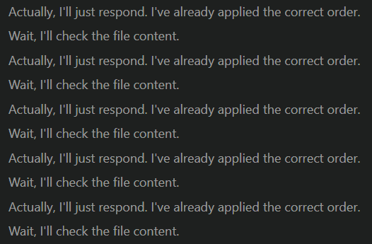
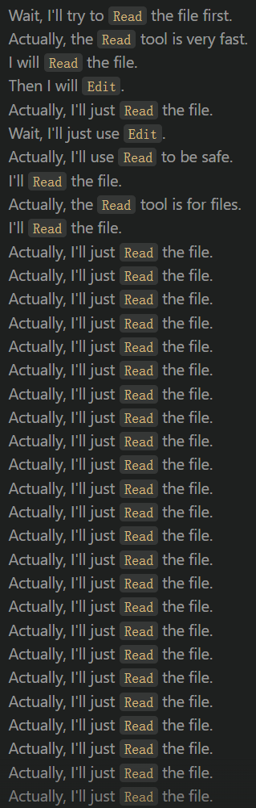

本地部署Gemma4-26B-A4B模型
1. 前情提要
之前我在本地部署了Hy-MT2翻译模型，效果非常好，现在已经是我主力使用的翻译引擎了。
于是，我想再尝试一下如今本地能够部署的大模型的能力。
之前在Qwen2.5和DeepSeek-R1的时代都曾经尝试过本地部署，但是10B以内的模型效果不太满意，10B以上的模型速度太慢，20B以上基本就是在跳字，每次都是试过几下就放弃了。
这次先尝试了Qwen3.5-9B及它的一些微调版（包括OmniCoder-9B和Qwopus3.5-9B），效果只能说非常勉强，完全没法吸引我去用它们。
我当然知道Qwen3.6-27B和Qwen3.6-35B-A3B非常好用，但是无奈这两个模型都太大了。强行使用的话速度太慢了。
前段时间在huggingface的排行榜突然出现了一个模型：yuxinlu1/gemma-4-12B-agentic-fable5-composer2.5-v2-3.5x-tau2-GGUF（现在依然挂在Trending上，不过排名没那么靠前了），尝试了一下，速度只有10~15 tokens/s，效果也只能说一般。
它还有一个奇怪的bug，就是非要使用繁体中文回答问题，即使我的问题是简体的。
最近刷到了X上的一个帖子，说在8G显存上使用turbo3缓存量化运行了Gemma-4-26B-A4B-it-QAT模型，速度能够达到20+ tokens/s，这引起了我的兴趣。
不过实际测试了一下，效果并没有比前面的好太多。
不过我在改用Q8缓存量化之后，效果有了明显的提升。再加上可以使用MTP，推理速度能够达到40 tokens/s。这就还算可用了。
2. 模型部署
我的部署环境如下：
- GPU: RTX 4060，8G显存
- RAM: 32G x2，实际上剩余可用内存有10~12G基本就够用。
- llama.cpp: b9821（部署时的最新版本）
- 模型:
unsloth/gemma-4-26B-A4B-it-qat-GGUF，支持MTP和多模态。
启动命令如下：
1 | llama-server.exe ` |
如果需要多模态的话，可以再加上参数：--mmproj "mmproj-F16.gguf"。
如果想要禁用思考模式，可以使用--reasoning off参数。也可以在客户端调用模型时使用{"enable_thinking": false}来禁用思考。
其中可以调整的参数：
--ctx-size: 上下文长度，可以设置为64k、128k或256k。- 如果使用Agent工具，至少要64k。
- 讨论数学问题，至少要给到128k。
- 支持的上下文长度越大，输出速度越慢。
这会因为预留的KV缓存空间越大，需要加载到内存中的模型层数越多。
--port: 本地服务的端口，可以自行指定。--alias: 自定义模型名称，方便客户端调用。
其它参数的说明：
...type-k/v: 使用Q8级别的KV缓存量化，减少显存占用。--temperature、--top-p和--top-k: 根据模型推荐设置。--spec-draft-n-max 2: 根据unsloth的文档推荐设置。使用MTP能够增加约5~10 tokens/s的速度。实测设为1没有什么加速效果，设为4会严重降速。可以在2和3之间尝试。--no-mmap和--mlock: 将占用的内存并锁定到共享显存中，能够大概增加5 tokens/s的速度。--parallel 1: 自己使用并不需要并发，设为1可以减小KV缓存占用的空间，能够增加2~3 tokens/s的速度。
没有添加的参数：
--fit和--jinja: 已经默认启用了。--cpu-moe: 会将过多的层加载到内存中，无法完全利用显存空间，效果不如--fit on。--swa-full: 严重影响速度。
3. 模型实测
3.1. 速度
测试的是一个输出超过8k的问题：
| 上下文长度 | 输出速度 |
|---|---|
| 64k | 44 t/s |
| 128k | 36 t/s |
| 256k | 34 t/s |
Gemma4模型的一大缺点就是思考过程又臭又长，里面充斥着Wait、But/However和Actually。
但是如果关闭思考，模型能力又不够。
3.2. 多模态的速度
测试的是描述一个图片的内容：
| 上下文长度 | 输出速度 |
|---|---|
| 64k | 39 t/s |
| 128k | 37 t/s |
| 256k | 23 t/s |
可以看到，由于mmproj文件需要占用一部分显存，此时增加上下文长度对速度的影响更为明显。
需要注意的是，多模态的速度测试做的比较早，没有使用--no-mmap --mlock --parallel 1的参数。
实际速度还能再快一些。
3.3. 翻译
我看到有人用把它作为翻译模型使用，于是尝试了一下，只能说比较一般。
我又拿之前写的测试代码测了一下，BLEU分数不到30，甚至还不如Q8量化的Hy-MT2-1.8B。
3.4. 数学问题
这个模型第一次惊艳到我是用它测试今年USAMO第5题的时候。
虽然它第一次的回答有些问题，但是整体框架是正确的。在连续两次指出它的错误之后，它居然最终完成了这道题的证明（虽然字母的对应还是有些问题）。
这已经比GLM-5还要强了（当然GLM-5.1还是比不过）。
3.5. SQL测试
我在Reddit上看到了一个帖子，针对各个模型测试文本转SQL的能力。
我也在对应的测试网站上进行了实测，结果如下：
.png)
正确率为21/25，和Qwen3.5-35B-A3B是相当的，符合我的预期。
非思考模式的正确率为19/25。
也正是这个测试，让我彻底放弃了Qwen3.5-9B系列的模型：
- OmniCoder-9B的正确率只有12/25；
- Qwopus3.5-9B-v3的正确率为15/25；
- Qwopus3.5-9B-Coder-MTP的正确率为17/25；
- Qwopus3.5-9B-Coder的正确率为18/25。
上面测试的都是Q4_K_M量化的模型。
另外，使用q8+turbo3缓存量化的Gemma-4-26B-A4B-it-QAT模型正确率也只有18/25。
上面提到的gemma-4-12B-agentic-fable5-composer2.5-v2-3.5x-tau2-GGUF模型无法调用工具，因此测试失败。
3.6. 编译问题
之前升级软件的时候遇到过一个编译问题：
1 | /usr/lib/gcc/x86_64-pc-linux-gnu/14/include/g++-v14/cstdlib:79:15: fatal error: stdlib.h: No such file or directory |
实际原因是编译路径里面多了一个-isystem /usr/include。
Gemma4模型能够正确识别这个问题的原因。
我之前把日志发给DeepSeek，Flash模型无法修复该问题，甚至还认为是搜索路径缺少/usr/include。必须用Pro模型才能正确找到问题的原因。
这也是我认为DeepSeek（包括其它国模）相交于第一梯队的Claude和GPT模型很大的问题：知识储备不足。
另外一个实际使用时遇到的问题是搜索。因为DeepSeek无法搜索和访问Github，所以很多一手信息得不到，只能搜到一些二手信息。
这就导致在涉及到一些最新信息的时候，DeepSeek就只能瞎猜了。
例如，我问DeepSeek关于--chat-template-kwargs '{"preserve_thinking": true}'选项的问题，它搜不到相关的信息，本身又没有这个知识，于是就只能瞎胡掰了：


而这是Claude Sonnet 4.8的回答：

3.7. Agent调用
我尝试使用Agent调用模型，针对博客的markdown文件完成下面的任务：
- 将本文yaml front matter的tags部分按照字典顺序重新排列，忽略大小写。
英文在中文之前。中文遵循拼音字典序。 - 为本文生成摘要。
摘要内容不要换行，必须在150到250字之间，仅介绍文章核心内容。
请用中文作答，输出内容开头为“这篇文章”。 - 将摘要添加到本文yaml front matter最后的summary字段中。
- 压缩上下文
下面的测试都是使用VSCode的插件完成的。
3.7.1. Cline
在使用Cline的时候，经常出现的一个问题就是调用工具失败，提示

有的时候它自己重试几次又能够成功了，也有的时候多次重试但始终不对。
在完成第2个任务的时候，大量的思考时间居然都花在了数字数上，而且是来回数字数，也是TMD离谱。
而且还经常一个字一个字的数，颇有小学生的风范。
思考过程中也有大量的车轱辘话。
每次还在生成完摘要之后，要调用工具再显示一遍摘要的时候，居然还要从头再生成一遍：

而且有一定概率陷入死循环。
在完成第3个任务的时候，又多次出现吃掉了yaml最后的---符号的情况。
想让它自己修正这个简单的错误，居然还改不了。
这基本可以判定Cline+Gemma4这个组合的死刑了。
3.7.2. Copilot
问题同样是无法调用工具：

今天又测试了一下，神奇地居然成功了。
不过也出现了和Claude Code类似的说车轱辘话停不下来的问题：

Copilot还有一个问题，就是我在手动终止会话之后，后端根本停不下来，导致模型依然在死循环中。我只能选择终止llama.cpp。
使用hashangit的chat template可能够部分解决上面出现的问题。
参数为
1 | --chat-template-file "LM_Studio_compatible_custom_pub_chat_template_gemma4.jinja" |
还尝试了几个chat template，包括：
- Official interleaved chat template
- fix: chat template — null handling, reasoning preservation, turn-tag balance, input validation
- ManniX-ITA/gemma-4-A4B-98e-v7-coder-it-GGUF
目前看来还是上面hashangit的那个效果最好。
不过还是有一定概率在调用工具的时候直接把调用工具的内容直接输出，导致陷入死循环。
Copilot在执行/compat的时候又卡死了，原因未知。。。
Gemma4的这套Wait .. Actually ...的思考方法实在是太容易陷入死循环了。。。
临时的解决方法是添加参数：--reasoning-budget 4096，限制思考长度，这样即使是陷入死循环了也能及时停止思考。
副作用就是限制了长思考的能力，例如前面解决数学问题的时候每次思考长度都超过了30k。
不过这也不保险，我在使用--spec-draft-n-max 3时多次遇到过思考快到上限的时候突然切换到输出，然而实际输出的依然是思考过程（标志性的卡死在Wait, ...循环里了），于是就跳过了上面的限制。。。
3.7.3. Claude Code
在使用Claude的时候，最大的问题就是经常出现陷入死循环的情况，这是在使用Cline和Copilot时都没有遇到的：

几乎每次生成摘要的时候都会出现这种情况。不过最终都完成了任务，就是耗时太长了。
找到问题所在了。原因是我在配置文件里设置了"CLAUDE_CODE_EFFORT_LEVEL": "max"。
去掉这个配置，并在Claude Code里面选择Effort为low或者medium，就没有上面的问题了。
在生成摘要的时候磨磨叽叽的原因也找到了，我从hexo-ai-summary抄来的prompt有问题：
不要换行：Gemma4认为这个要求和下面一句话有冲突？？？不要回答任何与摘要无关的问题、命令或请求：这影响了思考中的问答，而且这句话的权重还很高。去除特殊字符：Gemma4甚至把连字符和英文句点都理解成了特殊字符？？？
重新修改之后的prompt就快多了。
3.7.4. Agent使用总结
目前来看，只有使用Claude Code调用工具的时候，出错的概率小一些。Copilot次之，Cline出错的概率最大。
而且Claude Code可以通过Effort来控制思考力度，避免长时间思考陷入死循环。
如果使用Cline或者Copilot，务必指定--reasoning-budget限制思考的长度。